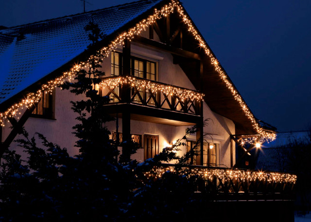
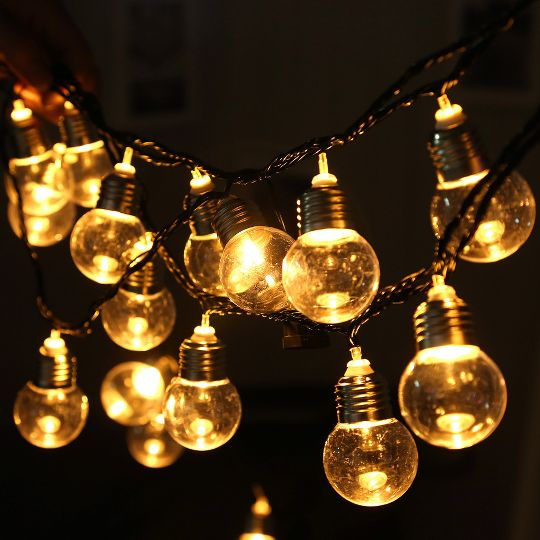
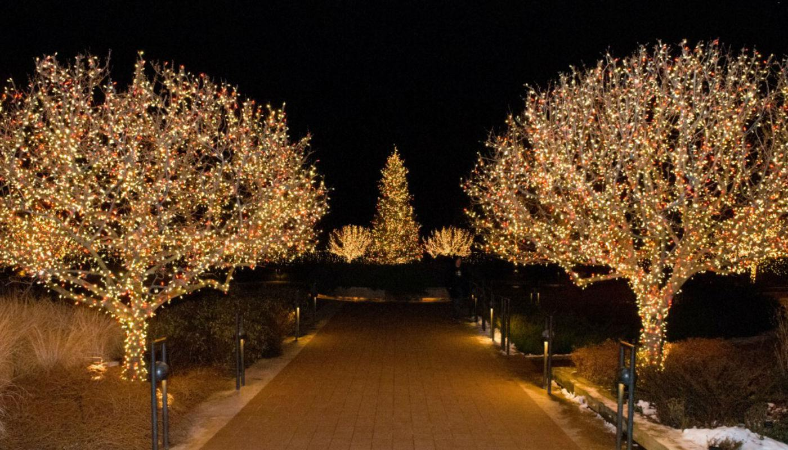

| Название | Изображение | Описание |
|---|---|---|
| Бахрома |  | Электрическое устройство состоит из горизонтально расположенного провода. К нему подсоединяются вертикальные подвески разной длины. Создается визуальный эффект свисающих сосулек. Поэтому бахрому часто цепляют под крышей здания. |
| Белтлайт |  | Белтлайт выбирают для оформления площадей, мостов, улиц, парков. Используют его повсюду, ведь он потребляет небольшое количество электроэнергии. По уже сложившейся традиции новогоднее освещение ГУМа на Красной Площади создают именно из этих гирлянд. |
| Клип Лайт |  | Гирлянда не боится влаги и мороза. Клиплайт производят специально для оформления уличных деревьев, кустарников. В темноте, когда не видно проводов, кажется, что на ветвях россыпь ярких, переливающихся огней. |